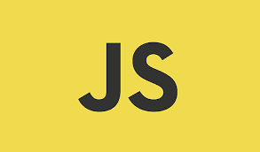

HTML
Hypertext Markup Language

HTML adalah singkatan dari HyperText Markup Language yaitu bahasa pemrograman standar yang
digunakan untuk membuat sebuah halaman web, yang kemudian dapat diakses untuk menampilkan
berbagai informasi di dalam sebuah penjelajah web Internet (Browser). HTML dapat juga digunakan
sebagai link link antara file-file dalam situs atau dalam komputer dengan menggunakan localhost,
atau link yang menghubungkan antar situs dalam dunia internet.
Supaya dapat menghasilkan tampilan wujud yang terintegerasi Pemformatan hiperteks sederhana
ditulis dalam berkas format ASCII sehingga menjadi halaman web dengan perintah-perintah HTML.
HTML merupakan sebuah bahasa yang bermula bahasa yang sebelumnya banyak dipakai di dunia
percetakan dan penerbirtan yang disebut Standard Generalized Markup Language (SGML).
Sekarang ini HTML merupakan standar Internet yang dikendalikan dan
didefinisikan pemakaiannya
oleh World Wide Web Consortium (W3C). Pada tahun 1989, HTML dibuat oleh kolaborasi Berners-lee
Robert dengan Caillau TIM pada saat mereka bekerja di CERN (CERN merupakan lembaga penelitian
fisika energi tinggi di Jenewa)
HTTP atau Hypertext Transfer Protokol merupakan protokol yang digunakan untuk mentransfer data
atau document yang berformat HTML dari web server ke web browser. Dengan HTTP inilah yang
memungkinkan Anda menjelajah internet dan melihat halaman web.
sumber artikel
CSS
cascading stye sheet

CSS adalah singkatan dari cascading style sheets, yaitu bahasa yang
digunakan untuk menentukan
tampilan dan format halaman website. Dengan CSS, Anda bisa mengatur jenis font, warna tulisan,
dan latar belakang halaman.
CSS digunakan bersama dengan bahasa markup, seperti HTML dan XML untuk membangun sebuah website
yang menarik dan memiliki fungsi yang berjalan baik.
CSS juga berguna untuk mengatasi keterbatasan HTML dalam mengatur format halaman website. Kenapa
demikian?
Apabila hanya menggunakan HTML ketika membangun website dengan beberapa halaman, Anda harus
menulis tag untuk sebuah elemen HTML di semua halaman tersebut.
Dengan adanya CSS, Anda cukup menulis kode satu kali untuk sebuah elemen HTML untuk diterapkan
ke semua halaman. Nantinya, ketika akan melakukan perubahan, Anda juga cukup melakukan perubahan
pada satu kode tadi. Praktis, bukan?
sumber artikel
JAVASCRIPT

JavaScript adalah skrip pemrograman ringan yang umumnya digunakan oleh developer untuk
menciptakan interaksi yang lebih dinamis pada halaman web, aplikasi, server, atau game.
Web developer umumnya menggunakan JavaScript bersama HTML dan CSS karena ketiganya bisa bekerja
sama tanpa masalah. Jadi, JavaScript adalah bahasa pemrogramannya, HTML berfungsi untuk menyusun
struktur website, dan CSS untuk mendesain serta mengatur layout halaman website.
JavaScript umum digunakan pada web, aplikasi seluler, dan game development, sehingga menjadi
salah satu yang paling populer.
sumber artikel
REACT JS
hyper text markup language

React JS adalah library JavaScript yang biasa digunakan saat membangun UI suatu website atau
aplikasi web.
Jadi, React JS bisa dianggap seperti perpustakaan yang berisi berbagai kode JavaScript yang
sudah tertulis (pre-written). Anda tinggal mengambil kode yang ingin Anda gunakan. Sehingga, ini
membuat proses coding menjadi lebih efisien dengan framework JavaScript tersebut.
Dengan JavaScript, Anda dapat membuat tampilan website yang lebih menarik. Nah, inilah mengapa
library ini berguna untuk membangun UI, karena pengaplikasian kode JavaScript di website Anda
bisa menjadi lebih mudah.
sumber artikel